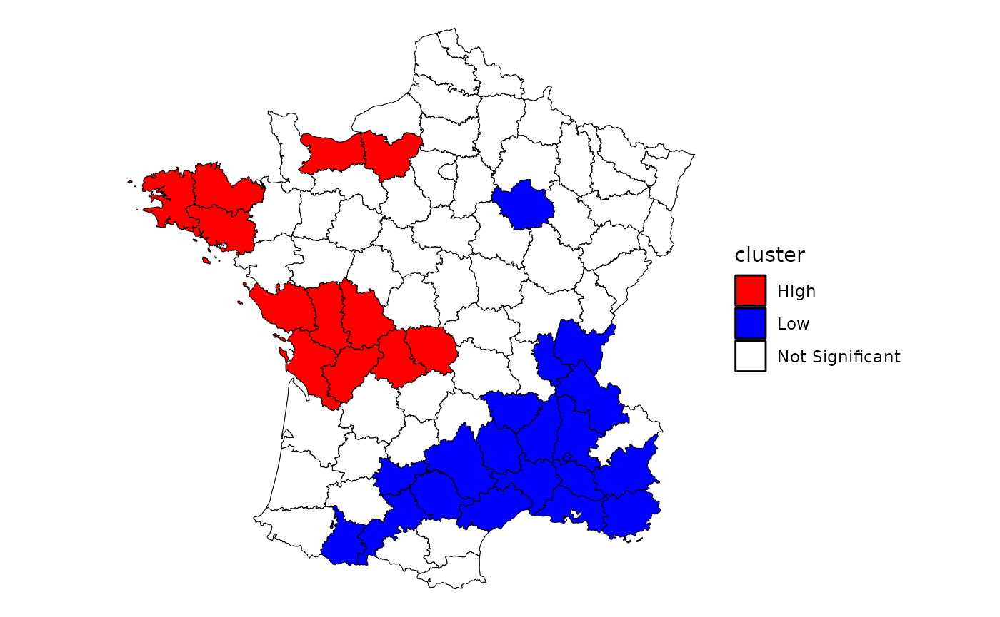
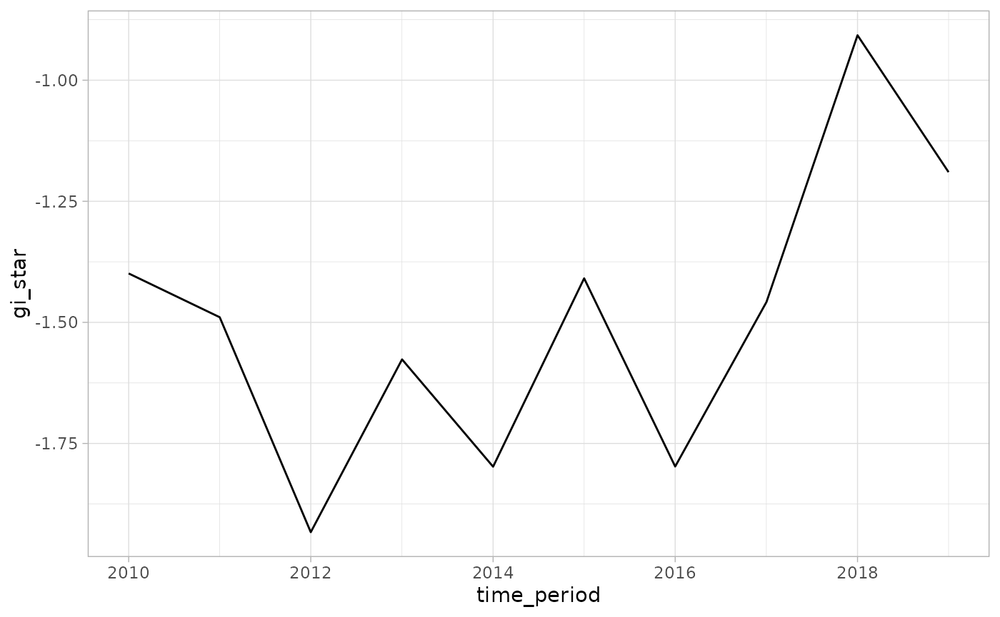

Emerging Hot Spot Analysis
Source:vignettes/articles/understanding-emerging-hotspots.Rmd
understanding-emerging-hotspots.RmdEmerging hot spot Analysis (EHSA) is a technique that falls under exploratory spatial data analysis (ESDA). It combines the traditional ESDA technique of hot spot analysis using the Getis-Ord Gi* statistic with the traditional time-series Mann-Kendall test for monotonic trends.
The goal of EHSA is to evaluate how hot and cold spots are changing over time. It helps us answer the questions: are they becoming increasingly hotter, are they cooling down, or are they staying the same?
In brief, EHSA works by calculating the Gi* for each time period. The series of Gi* at each location is treated as a time-series and evaluated for a trend using the Mann-Kendall statistic. The Gi* and the Mann-Kendall are compared together to create 17 unique classifications to help better understand how the locations have changed over time.
In this vignette we walk through the Getis-Ord Gi*, the Mann-Kendall, and how the two work together to in EHSA.
Gettis-Ord Gi*
The Gettis-Ord Gi and Gi* (pronounced gee-eye-star) are one of the earliest LISAs. The Gi and Gi* measures are typically reported as a Z-score where high values indicate a high-high cluster and negative Z-scores indicate a low-low cluster. There are no high-low and low-high classifications like the local Moran.
“The Gi statistic consist of a ratio of the weighted average of the values in the neighboring locations, to the sum of all values, not including the value at the location (\(x_i\))” (Local Spatial Autocorrelation (2), GeoDa Center).
\[ G_i = \frac{\sum_{j \ne i}W_{ij}X_j} {\sum_{j \ne i}X_j} \]
The Gi* statistic includes the focal (or self, or ith) observation in the neighborhood.
\[ G_i* = \frac{\sum_{j}W_{ij}X_j} {\sum_{j}X_j} \]
Calculating the local Gi*
To calculate the local Gi* using sfdep, we have to be especially
aware of the neighbors list when we create it. By default, when we
create a neighbors list, we exclude the self from the neighbors list
because it seems a little silly to say “I am my own neighbor.” However,
if we want to calculate the local Gi*, we must be sure to explicitly add
it using include_self()
Here, we follow the example laid out by the GeoDa center documentation to calculate and plot the local Gi* statistic for donations using the Guerry dataset.
First we create a neighbor list ensuring that the self is included and then create the weights list from the new neighbors list.
library(sfdep)
library(dplyr)
guerry_nb <- guerry |>
mutate(
nb = include_self(st_contiguity(geometry)),
wt = st_weights(nb)
) Following, we calculate the local Gi* using
local_gstar_perm() on the donations column
which creates a new data frame column called gi_star. We
then unnest it using tidyr::unnest().
donat_gistar <- guerry_nb |>
transmute(gi_star = local_gstar_perm(donations, nb, wt, nsim = 199)) |>
tidyr::unnest(gi_star)
donat_gistar
#> Simple feature collection with 85 features and 8 fields
#> Geometry type: MULTIPOLYGON
#> Dimension: XY
#> Bounding box: xmin: 47680 ymin: 1703258 xmax: 1031401 ymax: 2677441
#> CRS: NA
#> # A tibble: 85 × 9
#> gi_star e_gi var_gi p_value p_sim p_folded_sim skewness kurtosis
#> <dbl> <dbl> <dbl> <dbl> <dbl> <dbl> <dbl> <dbl>
#> 1 -1.43 0.0113 0.0000123 0.152 0.08 0.04 1.00 2.34
#> 2 -0.419 0.0115 0.00000892 0.675 0.74 0.37 0.681 0.798
#> 3 0.633 0.0117 0.0000110 0.527 0.48 0.24 0.950 1.31
#> 4 -1.73 0.0117 0.0000122 0.0838 0.04 0.02 0.846 1.14
#> 5 -1.00 0.0116 0.0000185 0.315 0.28 0.14 1.10 1.80
#> 6 -2.21 0.0122 0.0000109 0.0273 0.01 0.005 0.685 0.216
#> 7 -0.311 0.0116 0.0000173 0.756 0.86 0.43 0.636 -0.0266
#> 8 -0.650 0.0119 0.0000234 0.516 0.56 0.28 1.16 1.54
#> 9 -1.38 0.0121 0.0000141 0.168 0.11 0.055 0.841 1.16
#> 10 -1.33 0.0121 0.0000128 0.182 0.17 0.085 0.730 0.328
#> # … with 75 more rows, and 1 more variable: geometry <MULTIPOLYGON>Lastly, we classify the clusters using a combination of
mutate() and case_when() which is then piped
into a ggplot map. While not a perfect recreation of the GeoDa map, it
is very close—the differences likely due to conditional permutation (see
conditional permutation
vignette for more on significance calculation).
library(ggplot2)
donat_gistar |>
mutate(cluster = case_when(
p_folded_sim > 0.05 ~ "Not Significant",
p_folded_sim <= 0.05 & gi_star < 0 ~ "Low",
p_folded_sim <= 0.05 & gi_star > 0 ~ "High"
)) |>
ggplot(aes(fill = cluster)) +
geom_sf(lwd = 0.2, color = "black") +
scale_fill_manual(values = c("High" = "red",
"Low" = "Blue",
"Not Significant" = "white")) +
theme_void()
In EHSA, we calculate this statistic for each time period.
Mann-Kendall Test
With the calculations of the local Gi* for each unit of time for every geography, we can evaluate how the hotspots change over time. We incorporate time-series analysis through the use of the Mann-Kendall (MK) Trend test. The MK test is a nonparametric test that checks for monotonic trends.
If you don’t recall the term monotonic from your calculus class, that’s okay. A monotonic series or function is one that only increases (or decreases) and never changes direction. So long as the function either stays flat or continues to increase, it is monotonic.
The benefit of the test being nonparametric is that the trend can be non-linear. And further, the MK test does not check if a time-series is strictly monotonic—e.g. every subsequent unit is increasing or decreasing—but if the overall series is increasing or decreasing.
Below is an example of a monotonic upward trend which is not linear.
series <- c(0, 1, 1.4, 1.5, 1.6, 5, 5, 5.5, 8, seq(8, 8.5, length.out = 5))
plot(series, type = "l")For a more realistic example, let’s take a look a the
economics dataset from ggplot2 which contains
data from FRED. We’ll use the psavert variable which
contains data about personal savings rates in the United States.
econ <- ggplot2::economics
ggplot(econ, aes(date, psavert)) +
geom_line() +
theme_light()From a visual inspection, we can tell that overall the trend is
decreasing. The MK test can confirm this. We use
Kendall::MannKendall() to test if the trend is
significantly decreasing.
Kendall::MannKendall(econ$psavert)
#> tau = -0.644, 2-sided pvalue =< 2.22e-16The above results show the tau and p-value. Tau ranges
between -1 and 1 where -1 is a perfectly decreasing series and 1 is a
perfectly increasing series. The p-value is extremely small indicating
that the null-hypothesis (that there is no trend) can be rejected. The
tau is -0.64 which indicates a moderate downward trend.
The whole game
We’ve gone over briefly the local Gi* and the Mann-Kendall Test. EHSA combines the both of these to evaluate if there are trends in hot or cold spots over time.
EHSA utilizes a spacetime cube, or spatio-temporal full grid. Please see spacetime vignette for more on spacetime representations. In short, a spacetime cube contains a regular time-series for each location in a dataset—i.e. there are \(n \times m\) observations where n is the number of locations and m is the number of times.
For each time-slice (i.e. the complete set of geometries for a given time) the local Gi* is calculated. Say we have 10 times, we will have for each i \(G_{i,t=1}^*, \ldots, G_{i,t=10}^*\).
Then, given each location’s time-series of Gi*, they are assessed using the MK test.
A hands on example
We can compute the EHSA manually using sfdep and spacetime classes.
In this example we utilize Ecometric
Data from the Boston Area Research Initiative (data
and documentation). These data are generated from 911 calls in
Boston from 2010 - 2020 and aggregated to the Census Block Group (CBG)
level. The column value indicates the calculated prevalence
which is derived from Exploratory Factor Analysis and population
projections.
Data
The data are stored in the internal data file
bos-ecometric.csv and bos-ecometric.geojson.
We will read these in to df and geo and will
create a new spacetime object called bos with them.
Note: 2022-05-31 this data is available only in the development version, so please install with
remotes::install_github("josiahparry/sfdep").
# Create objects to store file paths
df_fp <- system.file("extdata", "bos-ecometric.csv", package = "sfdep")
geo_fp <- system.file("extdata", "bos-ecometric.geojson", package = "sfdep")
# read in data
df <- readr::read_csv(df_fp, col_types = "ccidD")
geo <- sf::read_sf(geo_fp)
# Create spacetime object called `bos`
bos <- spacetime(df, geo,
.loc_col = ".region_id",
.time_col = "time_period")
bos
#> spacetime ────
#> Context:`data`
#> 168 locations `.region_id`
#> 10 time periods `time_period`
#> ── data context ────────────────────────────────────────────────────────────────
#> # A tibble: 1,680 × 5
#> .region_id ecometric year value time_period
#> * <chr> <chr> <int> <dbl> <date>
#> 1 25025010405 Guns 2010 0.35 2010-01-01
#> 2 25025010405 Guns 2011 0.89 2011-01-01
#> 3 25025010405 Guns 2012 1.2 2012-01-01
#> 4 25025010405 Guns 2013 0.84 2013-01-01
#> 5 25025010405 Guns 2014 1.5 2014-01-01
#> 6 25025010405 Guns 2015 1.15 2015-01-01
#> 7 25025010405 Guns 2016 1.48 2016-01-01
#> 8 25025010405 Guns 2017 1.64 2017-01-01
#> 9 25025010405 Guns 2018 0.49 2018-01-01
#> 10 25025010405 Guns 2019 0.17 2019-01-01
#> # … with 1,670 more rowsLocal Gi*
The first step in EHSA is to calculate the local Gi* for each time period. But that, however, requires a couple of preceding steps. Before we calculate Gi* we need to identify neighbors and weights.
To do this, we activate the geometry context and create two new
columns nb and wt. Then we will activate the
data context again and copy over the nb and wt columns to each
time-slice using set_nbs() and
set_wts()—row order is very important so
do not rearrange the observations after using set_nbs() or
set_wts().
bos_nb <- bos |>
activate("geometry") |>
mutate(
nb = include_self(st_contiguity(geometry)),
wt = st_weights(nb)
) |>
set_nbs("nb") |>
set_wts("wt")
head(bos_nb)
#> spacetime ────
#> Context:`data`
#> 168 locations `.region_id`
#> 10 time periods `time_period`
#> ── data context ────────────────────────────────────────────────────────────────
#> # A tibble: 6 × 7
#> .region_id ecometric year value time_period nb wt
#> <chr> <chr> <int> <dbl> <date> <list> <list>
#> 1 25025010405 Guns 2010 0.35 2010-01-01 <int [9]> <dbl [9]>
#> 2 25025010404 Guns 2010 0 2010-01-01 <int [4]> <dbl [4]>
#> 3 25025010801 Guns 2010 0 2010-01-01 <int [5]> <dbl [5]>
#> 4 25025010702 Guns 2010 0.46 2010-01-01 <int [6]> <dbl [6]>
#> 5 25025010204 Guns 2010 0 2010-01-01 <int [4]> <dbl [4]>
#> 6 25025010802 Guns 2010 0 2010-01-01 <int [5]> <dbl [5]>This dataset now has neighbors and weights for each time-slice. We
can use these new columns to manually calculate the local Gi* for each
location. We can do this by grouping by time_period and
using local_gstar_perm(). After which, we unnest the new
data frame column gi_star.
gi_stars <- bos_nb |>
group_by(time_period) |>
mutate(gi_star = local_gstar_perm(value, nb, wt)) |>
tidyr::unnest(gi_star)
gi_stars |>
select(.region_id, time_period, gi_star, p_folded_sim)
#> # A tibble: 1,680 × 4
#> # Groups: time_period [10]
#> .region_id time_period gi_star p_folded_sim
#> <chr> <date> <dbl> <dbl>
#> 1 25025010405 2010-01-01 -1.03 0.154
#> 2 25025010404 2010-01-01 -1.31 0.048
#> 3 25025010801 2010-01-01 -1.44 0.034
#> 4 25025010702 2010-01-01 -0.858 0.186
#> 5 25025010204 2010-01-01 -1.38 0.042
#> 6 25025010802 2010-01-01 -1.38 0.026
#> 7 25025010104 2010-01-01 -1.66 0.016
#> 8 25025000703 2010-01-01 -1.43 0.026
#> 9 25025000504 2010-01-01 -1.36 0.058
#> 10 25025000704 2010-01-01 -1.62 0.006
#> # … with 1,670 more rowsWith these Gi* measures we can then evaluate each location for a trend using the Mann-Kendall test.
Mann-Kendall Test
Let’s first take only a single location, 25025010403,
and evaluate the Mann-Kendall statistic for it by hand. Then we can
extend this to each location.
Note that there is a bit of finagling the MK test to make it work nicely in a dplyr::summarise() call.
cbg <- gi_stars |>
ungroup() |>
filter(.region_id == "25025010403") |>
select(.region_id, time_period, year, gi_star)We can also visualized this trend.
# visualize trend
ggplot(cbg, aes(time_period, gi_star)) +
geom_line() +
theme_light()
cbg |>
summarise(mk = list(unclass(Kendall::MannKendall(gi_star)))) |>
tidyr::unnest_wider(mk)
#> # A tibble: 1 × 5
#> tau sl S D varS
#> <dbl> <dbl> <dbl> <dbl> <dbl>
#> 1 0.333 0.210 15 45 125In the above result, sl is the p-value. This result
tells us that there is a slight upward but insignificant trend.
We can replicate this for each location by using
group_by().
ehsa_manual <- gi_stars |>
group_by(.region_id) |>
summarise(mk = list(unclass(Kendall::MannKendall(gi_star)))) |>
tidyr::unnest_wider(mk)
# arrange to show significant emerging hot/cold spots
emerging <- ehsa_manual |>
arrange(sl, abs(tau)) |>
slice(1:5)
# show top 5 locations
emerging
#> # A tibble: 5 × 6
#> .region_id tau sl S D varS
#> <chr> <dbl> <dbl> <dbl> <dbl> <dbl>
#> 1 25025120201 -0.956 0.000172 -43 45 125
#> 2 25025100601 -0.822 0.00128 -37 45 125
#> 3 25025030200 0.778 0.00236 35 45 125
#> 4 25025060600 0.778 0.00236 35 45 125
#> 5 25025000301 -0.778 0.00236 -35 45 125Here we can see there are a few locations that are becoming significantly colder and others that are becoming significantly warmer.
Using emerging_hotspot_analysis()
While we can do the calculations manually as above, this is limited
in two ways. Primarily that in the above example we used spatial
neighbors only. Whereas in EHSA we can—and likely should—incorporate the
time-lag of our spatial neighbors. Secondly, there are classifications
proposed by ESRI which help us understand how each location is changing
over time. Both of these are handled by the
emerging_hotspot_analysis() function.
This emerging_hotspot_analysis() takes a spacetime
object x, and the quoted name of the variable of interested
in .var at minimum. We can specify the number of time lags
using the argument k which is set to 1 by default.
# conduct EHSA
ehsa <- emerging_hotspot_analysis(
x = bos,
.var = "value",
k = 1,
nsim = 99
)
# preview some values
head(ehsa)
#> # A tibble: 6 × 4
#> location tau p_value classification
#> <chr> <dbl> <dbl> <chr>
#> 1 25025010405 0.111 0.721 sporadic coldspot
#> 2 25025010404 -0.333 0.210 sporadic coldspot
#> 3 25025010801 -0.200 0.474 sporadic coldspot
#> 4 25025010702 -0.600 0.0200 sporadic coldspot
#> 5 25025010204 -0.467 0.0736 persistent coldspot
#> 6 25025010802 -0.333 0.210 sporadic coldspot
# evaluate the classifications of our hotspots
count(ehsa, classification)
#> # A tibble: 8 × 2
#> classification n
#> <chr> <int>
#> 1 consecutive hotspot 19
#> 2 intensifying hotspot 1
#> 3 no pattern detected 15
#> 4 oscilating hotspot 1
#> 5 persistent coldspot 10
#> 6 persistent hotspot 5
#> 7 sporadic coldspot 87
#> 8 sporadic hotspot 30